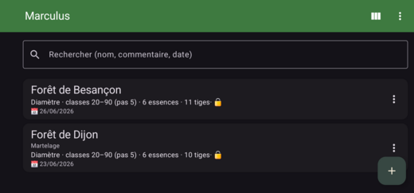
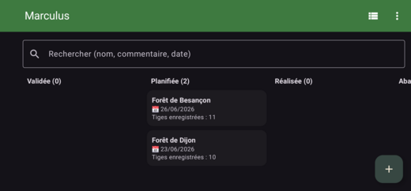
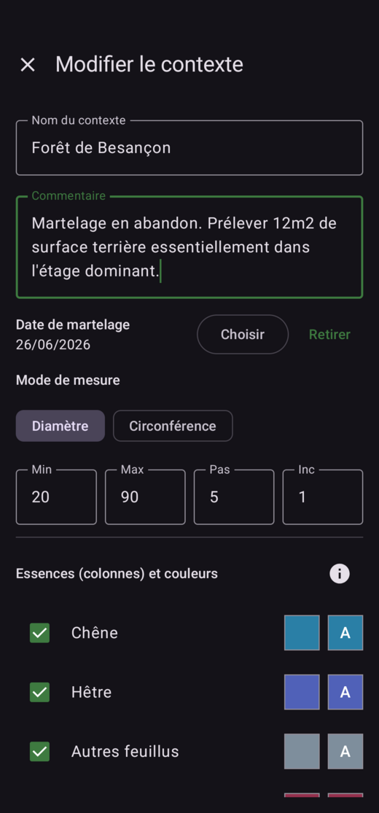
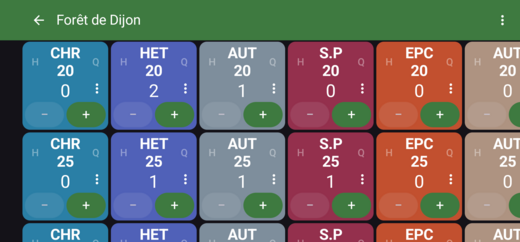
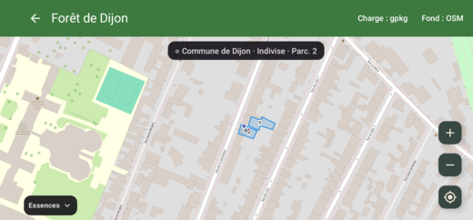
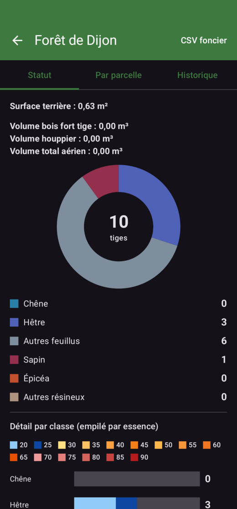
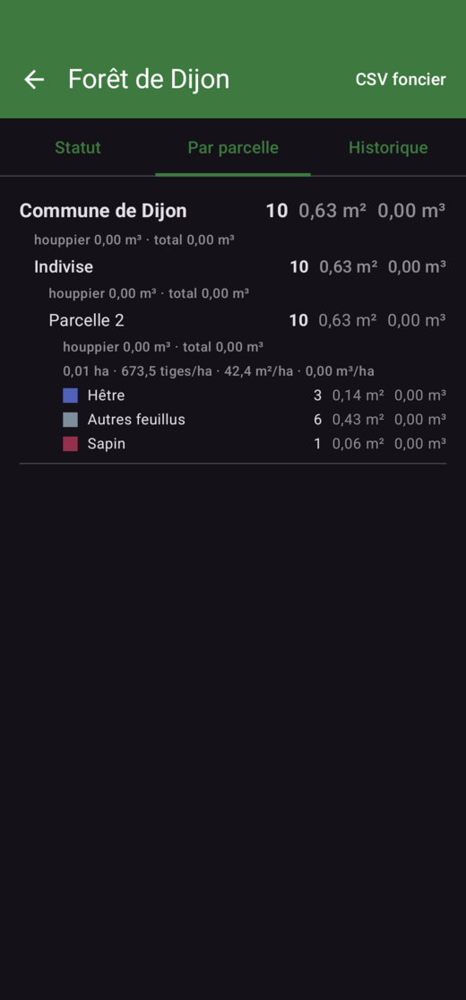
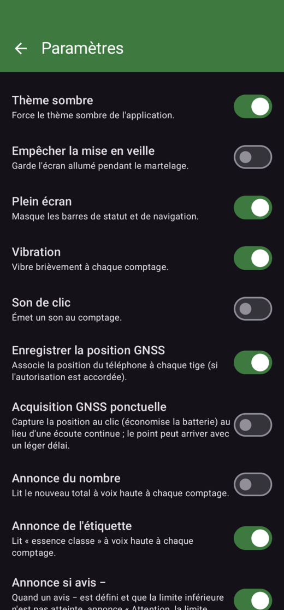

Feuille de martelage
Matrice essences × classes, journal append-only (UUID), hauteur/qualité, annonces vocales, code essence en gros.
Cubage
Schaeffer (rapide/lent) et EMERGE : bois fort tige, houppier et total aérien (226 essences), surface terrière.
Carte & foncier
GeoPackage par contexte (parcelles + ortho), rattachement spatial, acquisition GNSS continue ou ponctuelle.
Organisation
Recherche, date de martelage, vue Kanban 5 colonnes en glisser-déposer, tri par date.
Synchro multi-opérateurs
Partage par contexte (.marsync), fusion par UUID idempotente, « dernière écriture gagne ».
Exports
CSV contexte et foncier (Propriétaire → Forêt → Parcelle), colonnes G et volumes.
Aperçu de l'application
Faites défiler horizontalement →








Installation : télécharger l'APK depuis la release, autoriser les « sources inconnues », installer.